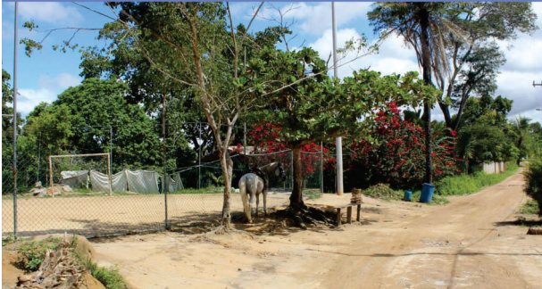
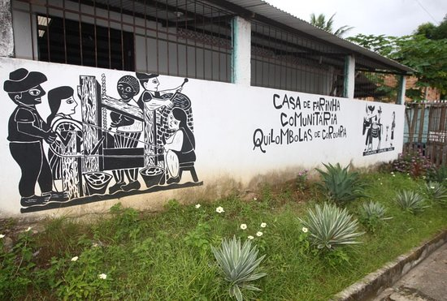

Quilombo QuingomaO Quilombo Quingoma é um dos territórios quilombolas mais antigos do Brasil, com registros de ocupação desde 1569, a história oral da comunidade conta que os ancestrais foram capturados na costa leste da África e trazidos nos primeiros navios negreiros que chegaram à costa da Bahia...


Quilombo da CordoariaO quilombo faz parte das comunidades remanescentes de quilombos do século 19, criados por escravizados libertos que receberam essas terras por doação ou como pagamento. As primeiras famílias que habitaram a região foram as famílias Reis e Santana, possíveis trabalhadores de canavieiras que receberam autorização dos antigos proprietários para usufruírem da terra. Com 260 anos de formação...